Multi Screens shows one web address on several device screens side by side, each with that device's real screen size, pixel density, touch behaviour and browser identity.
It is made for reviewing a web app before it reaches real devices. Instead of opening the same page on four devices and repeating every step four times, you do it once: look at the page on a Samsung S24 Ultra, an iPhone 16 Pro, an iPad and a 15.6-inch laptop together, interact on any one of them, and the others follow.
When something is wrong, you mark it: a spot or an area, and a comment. Multi Screens keeps a picture with every note and turns them into one PDF report to hand over.
What it is, and what it is not. Sizes, breakpoints, touch and layout are accurate. All screens use the same browser engine (Chromium), so a fault that only happens in Safari on a real iPhone will not show here. Use Multi Screens to find layout and behaviour problems quickly, and keep a final check on a real device.
The SCAFFApps team
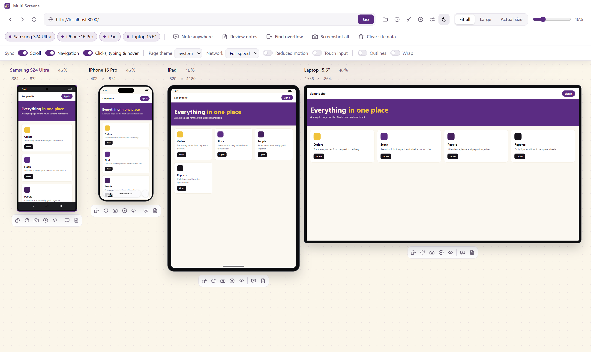
The light appearance: the sun or moon button switches it.
Multi Screens handbook · Version 1.10
INSTALL
Chapter 01 · Getting started
Install once. Review any site.
One installer, for 64-bit Windows 10 and 11. Multi Screens installs for everyone on the computer, with its shortcut in the Start menu's SCAFFApps folder.
DownloadMulti-Screens-Setup-1.10.x.exe from the Releases page, or install it from the SCAFFApps Suite.
InstallWindows asks for permission once. A page asks where to save screenshots, videos and reports.
Your name, onceThe first SCAFFApps app on a Windows account asks for your name and e-mail. The others do not ask again.
A first reviewType your app's address and press Go. Sign in once: every screen shares the sign-in.
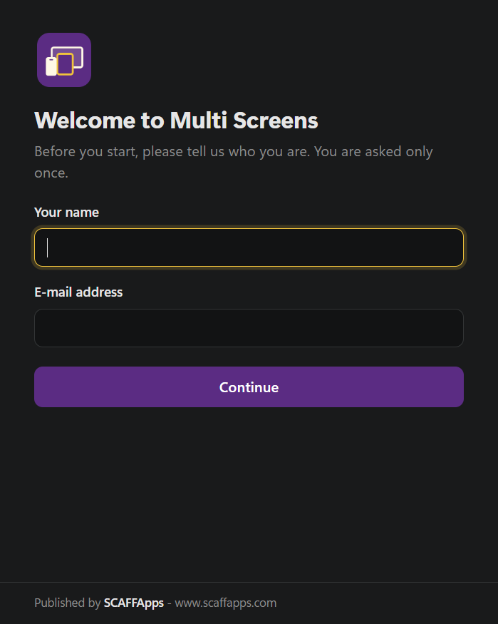
The first start: your name and e-mail address, asked once on each Windows account.
The output folder
Everything the app saves goes into one folder you choose, Documents\Multi Screens unless you pick another: the installer asks, or the app asks once on its first start when the SCAFFApps Suite installed it. Inside are three subfolders, Screenshots, Videos and Reports. The folder button in the top bar opens it; Settings changes it.
With more than one monitor
Multi Screens opens on the physically largest one. An address on your own computer works too, for example localhost:3000.
Good to know
"Windows protected your PC" may show the first time, because the installer is not code-signed. Choose More info, then Run anyway.
Remove it from Windows Settings, Apps, like any program. Your output folder is kept.
Coming from a portable copy? Run the installer once, then delete the old file.
Multi Screens handbook · Install and start
WINDOW
Chapter 02 · The window at a glance
Two bars. Four screens.
The top bar acts on every screen at once; the second bar decides what is kept in step and how the page is tested; each screen has its own buttons underneath.
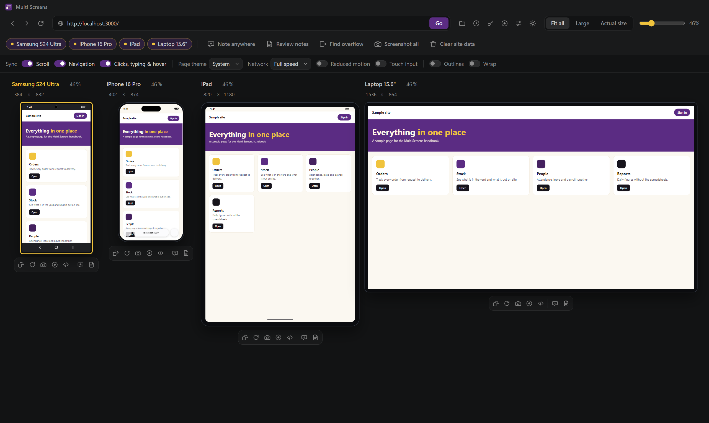
The main window, a sample page on all four screens. The screen you used last is the leader: outlined, its name in gold.
Top bar
What it does
Back, forward, reload
Act on all screens at once.
Address bar and Go
Loads an address on every screen, and suggests ones you have visited.
Folder · clock · key
The output folder · pages visited · saved logins.
Record
A video of the whole app window.
Sliders · sun or moon
Settings · dark or light appearance.
Views and zoom
Fit all, Large, Actual size, or a size of your own.
Device chips
Show or hide each screen.
Tools, beside the chips
Note anywhere, Review notes, Find overflow, Screenshot all, Clear site data.
Second bar
What it holds
Sync
Scroll, Navigation, and Clicks, typing & hover.
Testing
Page theme, Network, Reduced motion, Touch input.
Layout aids
Outlines and Wrap.
On a narrow window the tools show as icons only: point at one to see its name.
Multi Screens handbook · The window at a glance
SCREENS
Chapter 03 · The four screens
Real sizes. Real devices.
Each screen has its device's size, pixel density, touch behaviour and browser identity, so your page's breakpoints respond as they would on the real thing.
Screen
Screen size (CSS px)
Page area (CSS px)
Pixel ratio
Identifies as
Samsung S24 Ultra
384 × 832
384 × 745
3.75
Chrome on Android, touch
iPhone 16 Pro
402 × 874
402 × 812
3
Safari on iPhone, touch
iPad
820 × 1180
820 × 1156
2
Safari on iPad, touch
Laptop 15.6"
1536 × 864
1536 × 864
1.25
Chrome on Windows
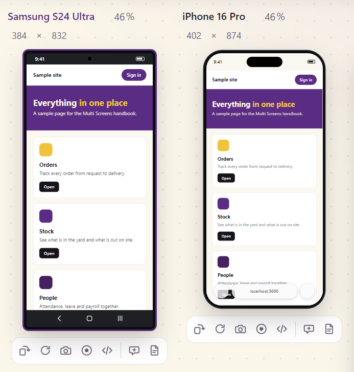
The phones, with the bars a real one has.
System bars
Samsung: a dark status bar with the camera punch-hole, and the three-button navigation bar at the bottom. iPhone: a status bar in the page's colour with the camera pill; the page runs to the bottom, under Safari's floating address bar, as on the real phone. iPad: a thin status bar and the home line (estimated heights). The phone measurements come from screenshots of a real iPhone 16 Pro and Samsung S24 Ultra.
Changing a screen
Rotate turns a screen between portrait and landscape. The width and height above any screen can be typed, to try another size. The laptop assumes a 1920 × 1080 display at Windows' usual 125%: change the numbers if yours differs.
CSS pixels
"CSS px" are the units a web page works in: what your breakpoints respond to. They are smaller numbers than the device's hardware pixels.
Real sizes, not real devices
It is not Safari. Every screen uses Chromium: faults that only occur in Safari on a real iPhone or iPad will not show. Keep a final check on a real device.
No native apps. Apps from an app store do not run in it; a screen-mirroring tool shows a real phone on a computer.
No safe areas. A page that asks how much room the camera cut-out takes receives zero, so it adds no padding here.
Multi Screens handbook · The four screens
SCALE
Chapter 04 · Size and scale
At 100%, life-size.
Every percentage means the same thing: size compared with the real device. At 100% a screen is drawn life-size on your display, and a 6.8-inch phone is always drawn larger than a 6.3-inch one.
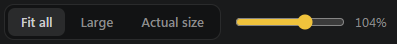
The views and the zoom slider, at the right of the top bar.
Fit all
The largest size at which every screen fits in the window. The usual view.
Large
Each screen as big as the window allows; scroll sideways between them. Percentages differ here.
Actual size
Every screen at exactly 100%: is that button really easy to tap?
Zoom slider
A size of your own, from 15% to 150%.
One screen on its own
Type a value into the percentage beside a screen's name. That screen keeps its own size while the others follow the slider, and its percentage is highlighted; the small × makes it follow again.
How it knows your display
Each monitor reports its size in millimetres. Multi Screens reads it for every display and uses the one its window is on: move the window and the scale follows; plug a monitor in or out and the sizes are read again.
Check it once
Choose Actual size and hold a real phone against the matching screen. They should be the same size.
If not, open Settings (the sliders) and type your display's diagonal in inches. It applies to that display only; Use the detected size undoes it.
A few monitors, televisions and projectors report no size or a wrong one: the app then estimates, and says so.
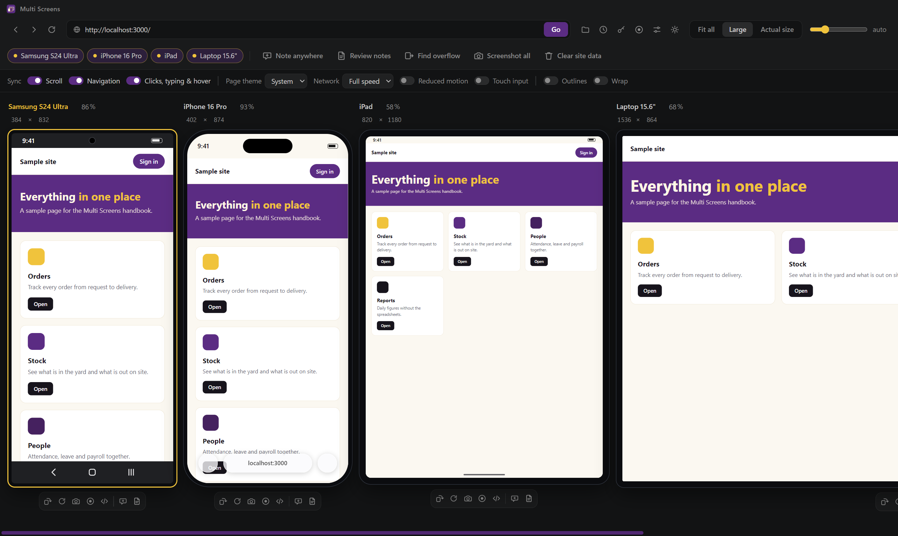
Large: each screen as big as the window allows, side by side; scroll sideways between them.
Multi Screens handbook · Size and scale
SYNC
Chapter 05 · Using it
Do it once. Every screen follows.
Three switches under Sync, in the second bar, decide what is repeated on the other screens. All three are on to begin with.
Sync, in the second bar: Scroll, Navigation, and Clicks, typing & hover. Turn one off to look at one screen without moving the others.
Scroll
Every screen lines up on the same part of the page, not the same percentage scrolled: a page is much taller on a phone than on a laptop.
Navigation
Follow a link or move to another page on one screen, and the others go there too.
Clicks, typing & hover
Clicks, text typed into fields, ticked boxes and hover effects are repeated on the other screens.
Good to know
Clicks follow the page's structure. A click is repeated by finding the same element on the other screens. Where the phone layout uses a menu button instead of a row of links, click it on that screen.
Hover on touch screens. Many sites show hover effects only with a mouse, so the phone and tablet screens rightly leave them out; the laptop screen always reacts.
Touch input makes the pointer behave as a finger on the phone and tablet screens: drag to scroll, taps sent as touch. A round cursor shows while it is on.
Multi Screens handbook · Keeping the screens in step
NOTES
Chapter 06 · Review notes
Mark it. Say what is wrong.
Write notes on what you see while you review: a spot or an area, and a comment. A picture of the screen, as it was at that moment, is kept with every note.
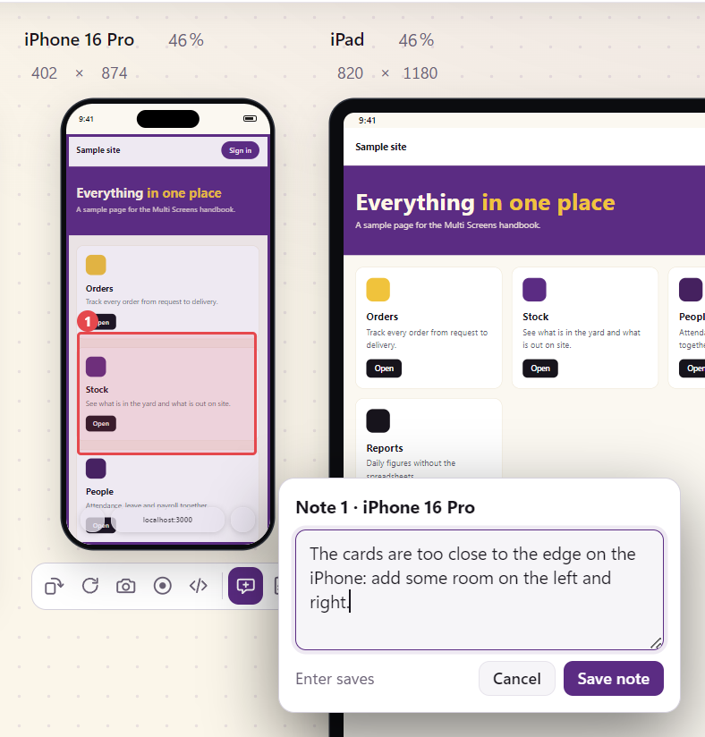
An area marked on the iPhone, with the note box open.
The note buttonUnder the screen you are looking at, press the speech bubble with a plus. The screen gets a tint and a crosshair.
A spot or an areaClick the spot you mean, or drag a rectangle over the area.
Your commentType it and choose Save note, or press Enter (Shift + Enter for a new line).
Carry onScroll, move to other pages, and add as many notes as you like, on any screen.
A red dot on a report button means notes are waiting. Notes are kept until they are reported or discarded, also after you close the app.
Note anywhere
Beside the device chips, it works the same way on the whole app window instead of one device: mark something that spans several screens, such as the same header on two phones. It covers the app window only, not other programs.
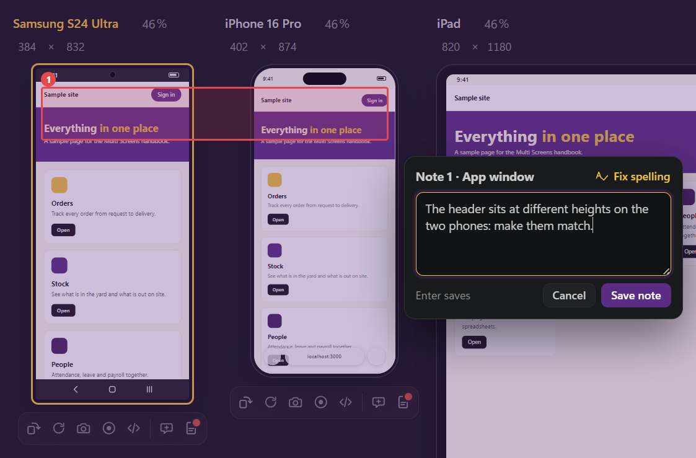
Note anywhere: one area across the Samsung and the iPhone.
Multi Screens handbook · Review notes
REPORT
Chapter 07 · The report
Every note, one PDF.
The page icon under a screen reviews that device's notes; Review notes, beside the device chips, all of them. Nothing is created until you say so.
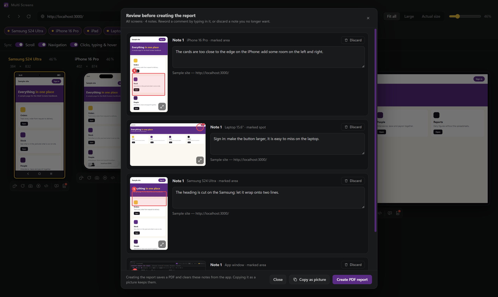
The review screen: each note with its picture and marker. Reword a comment by typing in it; discard one you no longer want.
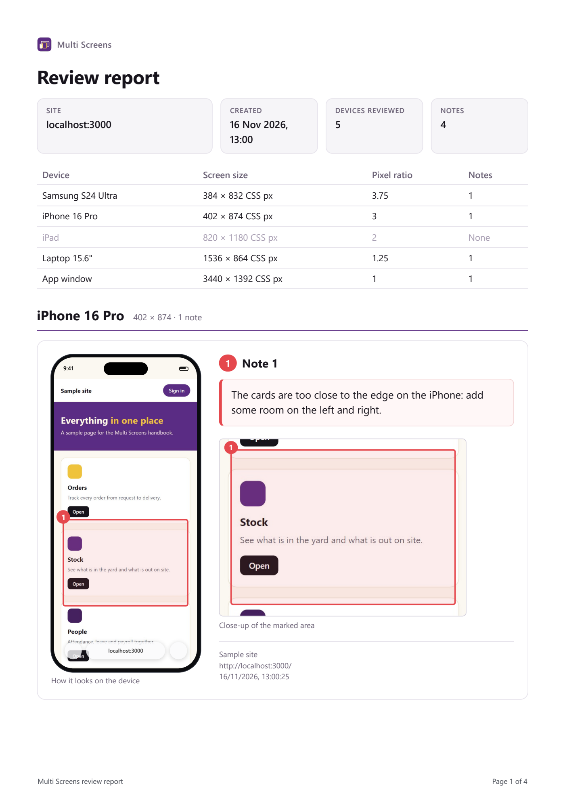
The first page of a report.
Enlarge a picture
Click it. Zoom with − and +, by clicking a point, or with Ctrl + the mouse wheel, up to six times; Esc closes it.
Create PDF report
Saved in the Reports folder; click the message to open it. Copy as picture puts the report on the clipboard instead, to paste into a chat; the notes stay.
What it holds
The site, the date and the counts; the devices; then each note: comment, the device with a numbered marker, a close-up, the page's title, address and time.
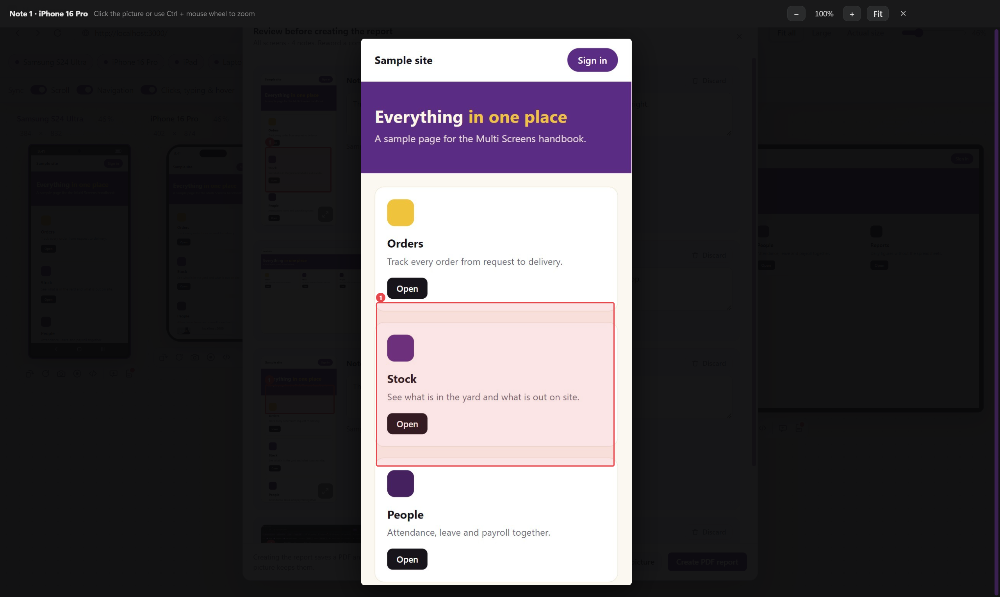
A note's picture, enlarged, with its marker.
Creating a report clears its notes
A device's report removes that device's notes from the app; the all-screens report removes every note. The notes live on in the PDF, and the report cannot be made again: open the PDF and check it before moving on.
An all-screens report lists every device that was on show, those without notes too, so "Devices reviewed" is the number you looked at.
Multi Screens handbook · The report
SHOTS
Chapter 08 · Screenshots and video
Keep what you see. Show how it moves.
A picture of one screen or of every screen, and a video of the whole window or of one device. Each kind goes into its own subfolder of the output folder.
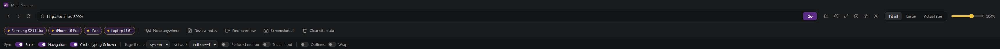
Record, in the top bar, records the whole window; Screenshot all, beside the device chips, takes every screen.Under each screen, left to right: rotate, reload this screen, screenshot, record this screen, developer tools, add a note, review notes.
Screenshots
The camera under a screen saves a picture of that screen.
Screenshot all, beside the device chips, saves one of every visible screen.
They are saved in Screenshots, and show what the device shows, not the whole scrolling page. A screen flickers for a moment: it is redrawn at full size to make the picture sharp.
Video
Button
What is recorded
Record, top bar
The whole app window, toolbars included.
Record, under a screen
That device only, cut to its body, even if you scroll the row or change the zoom.
Press it, confirm, and use the app as normal: the button turns red and the time shows. Press again to stop; the video is saved in Videos as a .webm file (no sound), which browsers, VLC and the Media Player app play. One recording at a time.
Good to know
A sharper video of one device: it is recorded at the size it is drawn, so switch to Large or Actual size first.
Blank recordings: with the display asleep or locked, Windows gives blank frames. The app checks a second into a recording and warns you.
Multi Screens handbook · Screenshots and video
CHECKS
Chapter 09 · Testing and layout checks
Test the conditions. Find what spills over.
Tell the page what kind of visitor it has, slow the network down, and let the app point at what breaks the layout.
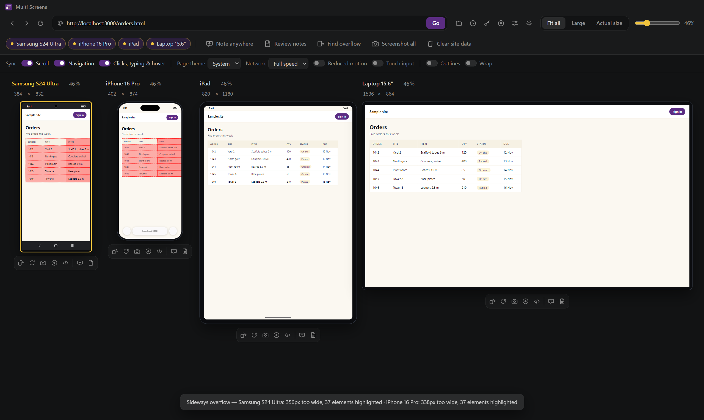
Find overflow on a page whose table is too wide for the phones: what makes each screen scroll sideways is highlighted, and the message says by how many pixels.
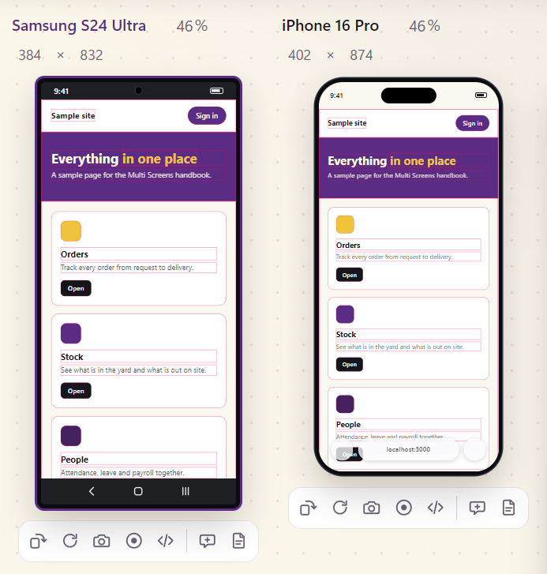
Outlines on the phones.
Condition
What it does
Page theme
Tells the page the visitor prefers light or dark, to check both. (The sun or moon button changes Multi Screens itself.)
Network
Fast 4G, Slow 4G, Slow 3G or Offline, on every screen.
Reduced motion
The visitor prefers less animation.
Touch input
The mouse acts as a finger on the phones and the tablet.
Layout tool
What it does
Outlines
A line around every element: spacing and alignment at a glance.
Find overflow
Highlights what makes a screen scroll sideways.
Error number
A red number beside a screen's name counts the page's errors; click it for developer tools.
Developer tools
The inspector for one screen (its device behaviour pauses while it is open).
Wrap
The screens flow onto several rows.
Starting clean.Clear site data deletes cookies, sign-ins and stored data for the pages you have been viewing, after asking: test as a first-time visitor. Saved logins, history and notes are kept.
Multi Screens handbook · Testing and layout checks
SETTINGS
Chapter 10 · History, saved logins, settings
Back in one click. Signed in at once.
The clock lists the pages you have opened; the key fills a sign-in form on every screen; the sliders hold the display size and the output folder.
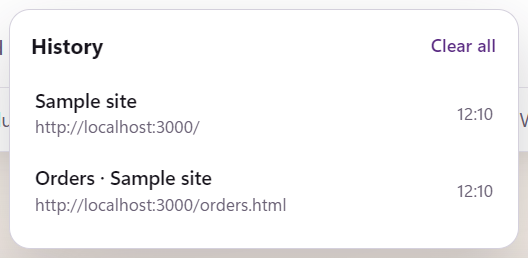
History: newest first. Click a page to open it on every screen; Clear all empties it. Up to 300 pages; the address bar suggests them too.
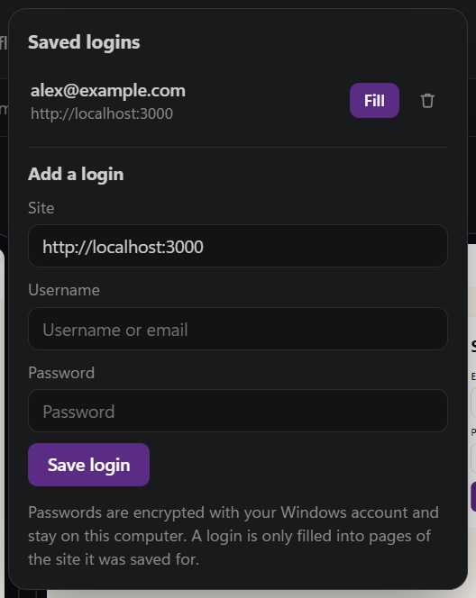
Saved logins: the Site is filled in for you. Later, on the sign-in page, choose Fill, then the site's own sign-in button.
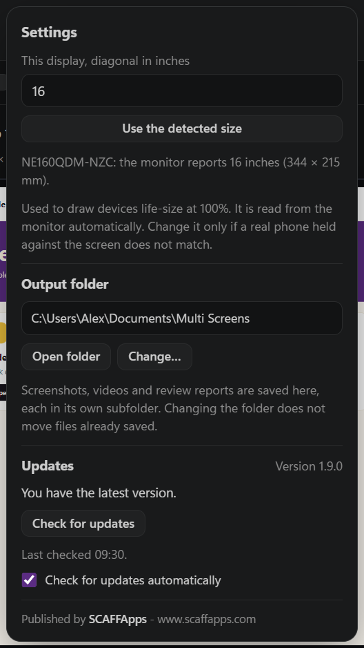
Settings: this display's size, the output folder, and updates (next page).
How saved logins are protected
Passwords are encrypted with your Windows account before they are written to disk: another Windows user, or another computer, cannot read them.
A login is filled only into pages of the exact site it was saved for.
Anyone who can use your unlocked Windows account can open the app and fill a saved login: do not save logins on a shared account.
Multi Screens handbook · History, saved logins, settings
UPDATE
Chapter 11 · Updates
Always the newest. Never a fuss.
Multi Screens checks for a newer version by itself, shows what is new, and installs it when you say so. Your settings, history, saved logins, notes and output folder stay as they are.
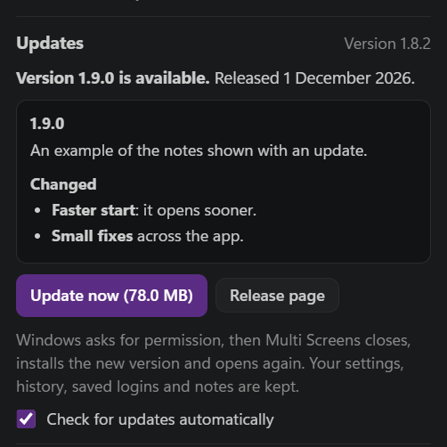
Settings, when a newer version is out. The version and notes shown are an example.
Checked for youA few seconds after it starts, and once a day while it stays open, it asks GitHub for the latest release. A message says so once, and the Settings button carries a gold dot until you update. Check for updates asks straight away.
What is newThe new version's notes show in Settings; Release page opens them in full.
Update nowDownloads it and checks it against the SHA-256 checksums published with it. A file that does not match is thrown away and nothing is installed.
Installed in placeWindows asks for permission; Multi Screens closes, installs the new version in the same folder without the installer's pages, and opens again.
Before you update
Stop a recording, and save or cancel a note you are placing.
The SCAFFApps Suite
Installs, opens and updates Multi Screens and the other SCAFFApps apps from one window.
Turning the checks off
Clear Check for updates automatically: GitHub is then asked only when you choose to. A check names the app and its version; nothing else is sent.
Multi Screens handbook · Updates
KEYS
Chapter 12 · Shortcuts and troubleshooting
The keys. The fixes.
Keys
Action
F5 or Ctrl + R
Reload all screens.
Ctrl + Shift + R
Reload all screens without the cache. Shift-clicking the reload button does the same.
Ctrl + L
Jump to the address bar.
Alt + N
Note anywhere.
Alt + R · O · S
Review notes · Find overflow · Screenshot all. These also work while you are in a screen.
Enter
Save the note being written (Shift + Enter for a new line).
Ctrl + mouse wheel
Zoom the enlarged picture of a note.
Esc
Close a panel or the enlarged picture, or cancel a note being placed.
If something is not right
What you see
What to do
"Windows protected your PC"
Choose More info, then Run anyway. The installer is not code-signed.
A page will not load
Check the address, and that you are online. The Network control may be set to Offline.
A click is not repeated on another screen
That screen's layout uses a different element: click it there.
Sizes do not match a real phone at 100%
Correct the display size in Settings (Size and scale).
A device stops behaving like a phone
Its developer tools are open: close them.
The pointer is a round dot
Touch input is on: turn it off in the second bar.
A video is plain white
The display was asleep or locked: wake it and record again.
A screenshot, video or report is missing
Press the folder button in the top bar.
An old review's notes are in a new report
Notes stay until reported or discarded: discard them in Review notes first.
Need a hand?
Write to info@scaffapps.com with what you see and what you expected.
Say which version you have: Settings, under Updates.
A picture helps: the camera under a screen, or Screenshot all.
Start fresh
Clear site data, beside the device chips, signs every screen out and forgets what the pages stored: test as a first-time visitor.
Review notes shows every note still waiting; discard the old ones before a new review.
Fit all brings every screen back into view.
Multi Screens handbook · Shortcuts and help
SCAFFApps/Multi Screens·Published by SCAFFApps
Useful apps
for every laptop.
Multi Screens is one of the SCAFFApps apps: small, focused tools for people who work on a laptop all day. Each installs in a moment and keeps itself up to date.
Multi Screens
Smart Snap
Instant Share
SCAFFApps Suite
+And more to come
Every app, in one window.
The SCAFFApps Suite installs, opens and updates them all, and updates itself: one place to see which version you have and what is new. Get it, and every app, from github.com/Rady193.

 Smart Snap
Smart Snap Instant Share
Instant Share SCAFFApps Suite
SCAFFApps Suite